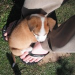

Of Collars and Kennels
Most recent challenge: collar.
We haz a very cute red one (photo below) that Roxy, of course, hates.
She goes into this weird epileptic-type fit once she realises she’s got it on, then flumps down somewhere and looks all depressed. Poor puppy!
We have adapted the kennel.
She’s an inside dog, so kennelling outside seems silly.
The kennel currently lives, roofless, next to the bed, with her dog bed in it.
She loves it!
After the next week or two, we’re going to put the roof back on and move the kennel into a corner.
Slowly, slowly, catch-y soft monkey. Dog. Thing.
After that, it gets a door on the front. It’s all about crating.
It seemed a bit mental to me at first, but now I’m getting the idea. Safe, quiet, place and all that.
Finally managing to find some time to read the dog training book we bought.
It’s got some good training techniques, but lots of it is wrapped in odd hippy new-age stuff.
Hmm.
Also: photos!

I said, she is very young and she will get there! Judy was much more hard work, not sure if you got this message before. xx
She’s getting there…

And being very cute makes up for a lot!